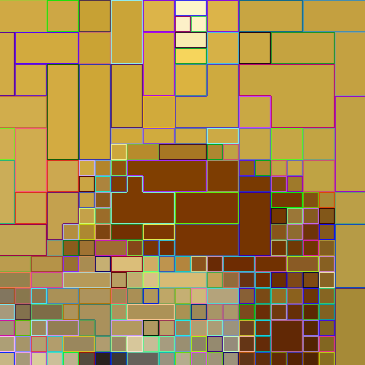

|
Daan de Geus I'm an assistant professor in the Mobile Perception Systems Lab at the Eindhoven University of Technology (TU/e), in the Netherlands. I did my PhD at TU/e, and was a visiting PostDoc in the Computer Vision Lab at RWTH Aachen University, headed by Prof. Dr. Bastian Leibe. My research focuses on machine learning for visual and multimodal scene understanding. |
News
[2025/10] Honored to be selected as a top reviewer for NeurIPS 2025. |
Selected publicationsSee all publications here. |
|
|
DONUT: A Decoder-Only Model for Trajectory Prediction
Markus Knoche, Daan de Geus, Bastian Leibe ICCV, 2025 Project page / arXiv / Code / YouTube We predict future trajectories autoregressively with a decoder-only model, to treat historical and future trajectories identically. |
|
|
Your ViT is Secretly an Image Segmentation Model
Tommie Kerssies, Niccolò Cavagnero, Alexander Hermans, Narges Norouzi, Giuseppe Averta, Bastian Leibe, Gijs Dubbelman, Daan de Geus CVPR, 2025 (Highlight Paper) Project page / arXiv / CVF / Code With a sufficiently large model and extensive pre-training, complex task-specific components are not necessary for image segmentation. |
|
|
DINO in the Room: Leveraging 2D Foundation Models for 3D Segmentation
Karim Abou Zeid*, Kadir Yilmaz*, Daan de Geus, Alexander Hermans, David Adrian, Timm Linder, Bastian Leibe arXiv, 2025 Project page / arXiv / Code (soon) We inject image-based DINOv2 features into a point cloud model to dramatically enhance 3D segmentation performance. |
|
|
Fine-Tuning Image-Conditional Diffusion Models is Easier than You Think
Gonzalo Martin Garcia*, Karim Abou Zeid*, Christian Schmidt*, Daan de Geus, Alexander Hermans, Bastian Leibe WACV, 2025 (Oral Presentation) Project page / arXiv / CVF / Code / Demo Repurposing diffusion models for geometry estimation is as simple as end-to-end fine-tuning. |
|

|
ALGM: Adaptive Local-then-Global Token Merging for Efficient Semantic Segmentation with Plain Vision Transformers
Narges Norouzi, Svetlana Orlova, Daan de Geus, Gijs Dubbelman CVPR, 2024 Project page / arXiv / CVF / Code By merging patch tokens locally and then globally, the throughput of ViT-based segmentation models can be greatly enhanced while preserving accuracy. |
 |
Content-aware Token Sharing for Efficient Semantic Segmentation with Vision Transformers
Chenyang Lu*, Daan de Geus*, Gijs Dubbelman CVPR, 2023 Project page / arXiv / CVF / Code A small pre-processing network identifies image patches that can share a token in a ViT-based segmentation model, to improve efficiency without harming the accuracy. |
|
Based on Jon Barron's website. |